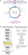
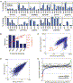
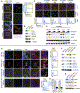
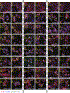
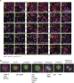
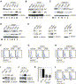

")


 E-mail Article
E-mail Article") Citation Feed
Citation Feed Add to my Quick Links
Add to my Quick Links


Resource
A Lentiviral RNAi Library for Human and Mouse Genes Applied to an Arrayed Viral High-Content Screen
Jason Moffat1, 2, 4, 10, Dorre A. Grueneberg1, 10, Xiaoping Yang1, 10, So Young Kim1, 3, 7, Angela M. Kloepfer1, Gregory Hinkle1, 3, Bruno Piqani1, Thomas M. Eisenhaure5, Biao Luo1, Jennifer K. Grenier1, Anne E. Carpenter2, 4, Shi Yin Foo6, Sheila A. Stewart8, Brent R. Stockwell9, Nir Hacohen1, 5, 7, 11, William C. Hahn1, 3, 7, 11, Eric S. Lander1, 2, 4, 7, 11, David M. Sabatini1, 2, 4, 11 and David E. Root1, 11,  ,
,
Received 25 September 2005;
Summary
To enable arrayed or pooled loss-of-function screens in a wide range of mammalian cell types, including primary and nondividing cells, we are developing lentiviral short hairpin RNA (shRNA) libraries targeting the human and murine genomes. The libraries currently contain 104,000 vectors, targeting each of 22,000 human and mouse genes with multiple sequence-verified constructs. To test the utility of the library for arrayed screens, we developed a screen based on high-content imaging to identify genes required for mitotic progression in human cancer cells and applied it to an arrayed set of 5,000 unique shRNA-expressing lentiviruses that target 1,028 human genes. The screen identified several known and  100 candidate regulators of mitotic progression and proliferation; the availability of multiple shRNAs targeting the same gene facilitated functional validation of putative hits. This work provides a widely applicable resource for loss-of-function screens, as well as a roadmap for its application to biological discovery.
100 candidate regulators of mitotic progression and proliferation; the availability of multiple shRNAs targeting the same gene facilitated functional validation of putative hits. This work provides a widely applicable resource for loss-of-function screens, as well as a roadmap for its application to biological discovery.
Article Outline
- Introduction
- Results
- shRNA Library Production
- High-Throughput Lentivirus Production
- High-Content Screen for Regulators of Mitosis
- Discussion
- Experimental Procedures
- Library Production
- HT DNA and Virus Production
- HT Lentiviral Infections and Mitotic-Index Assay
- Quantitative RT-PCR
- Library Availability
- Acknowledgements
- Supplemental Data
- References
Introduction
The information available from genome sequencing efforts has transformed the nature of biological inquiry and has led to an increased need for tools that enable genome-scale functional studies. Sequencing the Saccharomyces cerevisiae genome fundamentally altered experimental approaches and led to the creation and widespread use of a yeast gene-deletion collection that has dramatically facilitated studies of gene function (Winzeler et al., 1999). Similarly, in model organisms such as Caenorhabditis elegans and Drosophila melanogaster, the recognition that RNA interference (RNAi) can be exploited to suppress gene expression (Fire et al., 1998 and Kennerdell and Carthew, 1998) has led to the rapid identification of the genes underlying many biological processes through powerful loss-of-function screens (Bettencourt-Dias et al., 2004, Boutros et al., 2004, Fraser et al., 2000, Kamath et al., 2003, Kiger et al., 2003 and Lum et al., 2003). Although powerful genetic tools already existed for both D. melanogaster and C. elegans, the availability of genome-scale libraries of RNAi reagents has facilitated comprehensive and, at the same time, increasingly complex loss-of-function screens.
RNAi also suppresses gene expression in mammalian cells (Elbashir et al., 2001), and chemically synthesized siRNAs have become essential tools for biological studies. Indeed, screens in human cells using commercially available libraries of synthetic siRNAs targeting defined gene families have identified modulators of TRAIL-induced apoptosis (Aza-Blanc et al., 2003) and cell survival (Mackeigan et al., 2005) as well as kinases required for clathrin- and caveolae-mediated endocytosis (Pelkmans et al., 2005). Unfortunately, many interesting mammalian cell types are resistant to the transfection methods needed to introduce synthetic siRNAs into cells.
An alternative approach is to transduce mammalian cells with viruses carrying expression cassettes that encode short hairpin RNAs (shRNAs) to generate gene-specific siRNAs within cells; this approach can achieve stable and highly effective gene suppression in a variety of mammalian cell types (Abbas-Terki et al., 2002, Brummelkamp et al., 2002, Paddison et al., 2002 and Stewart et al., 2003). Using large libraries of shRNA-expressing retroviral vectors, one group screened pools of retroviruses and identified components of the p53 pathway (Berns et al., 2004). Another group screened by transfecting cells with shRNA-expressing retroviral plasmids and identified genes involved in proteasome function (Paddison et al., 2004 and Silva et al., 2005). Recently, the same two libraries were used to identify two novel tumor-suppressor genes (Kolfschoten et al., 2005 and Westbrook et al., 2005). While these reports establish the precedent that shRNA libraries can be employed to perform loss-of-function screens in mammalian cells, it is clear that further exploration of the performance characteristics and limitations of such approaches is necessary before such large-scale applications become routine.
The ideal resource for mammalian genetics would consist of a widely available shRNA library that contains effective suppressors of all 20,000 human and mouse genes in a format that permits transduction of a wide range of cell types, including nondividing cells and primary cells in both “pooled” and “arrayed” formats. Arrayed screens, in which each shRNA is tested in an individual well, allow the study of biologically subtle and complex phenotypes—for example, by high-content imaging of cells in individual wells. This requires the development of protocols for efficient production of a high-titer viral stock for each shRNA. Such a resource would allow biomedical researchers to perform comprehensive and reliable loss-of-function screens to identify all genes that affect a wide range of cellular processes.
We formed The RNAi Consortium (TRC) with the goals of generating genome-scale shRNA libraries in viral vectors and developing efficient protocols for arrayed viral screens. The TRC library is designed to target most human and mouse genes, with multiple distinct constructs targeting each gene. The lentiviral vectors in this library, unlike their oncoretroviral counterparts, can infect nondividing cells, a crucial asset for suppressing gene expression in tissues or cell lines refractory to transfection (Federico, 2003).
Here, we describe the creation of the initial portion of the TRC lentiviral shRNA library and characterize its properties. The library (designated TRC1) currently contains constructs targeting 22,000 human and mouse genes, with 5 distinct shRNA constructs per gene. We address several significant challenges for efficient RNAi screening, including the variable effectiveness of different shRNA constructs, the potential for off-target effects, and the technical requirements for producing the high-titer viruses needed for arrayed screens. In addition, we have applied a subset of the TRC1 library in an arrayed virus-mediated shRNA screen to identify candidate regulators of mitotic progression in human colon cancer cells, using high-content imaging. We characterized the performance of the library in the context of this screen and identified 100 genes for which at least two independent shRNAs produce substantial and consistent changes in mitotic index. These genes represent a collection of candidate regulators of mitosis that merit further cell biological study. The TRC1 library offers a new resource for somatic-cell genetics, and its application in this study provides insights into the use of shRNA reagents in loss-of-function screens in mammalian cells.
Results
shRNA Library Production
To generate the TRC lentiviral library, we adapted the Lentihair vector (Stewart et al., 2003) to create pLKO.1, which carries the puromycin-resistance gene and drives shRNA expression from a human U6 promoter (Figure 1A). Although significant levels of recombination are often observed in retroviral vectors maintained in bacteria, we found that pLKO.1 undergoes very low levels of recombination during the cloning and plasmid-purification manipulations necessary for library construction. Specifically, diagnostic restriction digests of plasmid DNA from 244 library clones showed no evidence of recombination even after 10 rounds of sequential copying and regrowth (see Figure S1 in the Supplemental Data available with this article online), confirming that shRNA-containing pLKO.1 vectors remain structurally stable in bacteria.
|  | Full-size image (70K) |
Figure 1. Vector Features, Library Production, and Application
(A) pLKO.1.
(B) Bacterial glycerol stock production method.
(C) Scheme for library production and use.
We created a production pipeline (Figure 1B) to generate a library of sequence-verified shRNAs in pLKO.1. For each shRNA, we designed stem sequences matching a 21-base region of the target transcript with an intervening 6-base “loop” consisting of an XhoI site (Figure 1A). The 21-mer stem sequences were selected using previously described criteria for siRNA construction that attempt to maximize knockdown (Khvorova et al., 2003 and Schwarz et al., 2003) and minimize off-target effects, as well as to ensure that most genes in the library contain shRNAs that target both the 3′ untranslated region (UTR) and coding sequence (CDS) of their transcripts (see Supplemental Data). Oligonucleotide pairs for 90 hairpin sequences were annealed separately and ligated into pLKO.1, and the ligations were transformed into competent bacteria in a 96-well microtiter plate. The 90 transformations in each plate were then pooled and plated onto a large agar plate. A total of 672 colonies were selected robotically for growth, plasmid purification, and sequencing. This process yields 94% of the designed clones (Figure S2); each gene has an average of 4.7 unique shRNA constructs, and 96% of the genes have four or more different constructs.
The TRC1 library currently includes over 100,000 vectors, targeting 12,000 human and 10,000 mouse genes. We continue to generate 4,500 additional constructs per month. Detailed information on genes targeted in the library can be found at http://www.broad.mit.edu/genome_bio/trc/rnai.html.
High-Throughput Lentivirus Production
To exploit this library, we developed a high-throughput (HT) method to generate high-titer lentiviruses (Figure 1C). Specifically, we optimized a semiautomated procedure in 96-well plates in which HEK293T cells were transfected with library and packaging plasmids in a three-plasmid lentivirus packaging system (Naldini et al., 1996 and Zufferey et al., 1997). We collected 300 μl of transfected cell supernatants containing VSV-G pseudotyped lentiviruses over 36–60 hr and aliquoted and stored these lentivirus-containing supernatants at −80°C. As described below, a typical screen was performed in 384-well plates and used only 3 μl of lentiviral supernatant per well. Thus, the procedure above yields sufficient volumes of lentiviral supernatants from a single 96-well plate for 100 screens.
To monitor the infection efficiency of lentiviruses generated by this HT method, we measured the proportion of cells that acquire resistance to puromycin treatment following infection. We infected A549 lung cancer cells with an arrayed set of 1,500 distinct shRNA-expressing lentiviruses. The experiment was performed in duplicate, with puromycin added to one replicate and the other replicate left untreated. We calculated the ratio of cell numbers in paired wells (with and without puromycin treatment) after 4 days. Wells were designated as successfully infected if this ratio exceeded 0.25. By this criterion, 87% of the 1,500 lentiviruses yielded successful infections (Figure S3), consistent with the viral titers measured for a random sampling of library lentiviruses of 2 × 106–2 × 107 cfu/ml (data not shown). These data indicate that this HT process generates lentiviral stocks of sufficiently high titer to infect target cells without the need to normalize titers among wells or to concentrate the lentiviral stocks.
One attractive feature of this lentiviral library is its ability to transduce a wide range of cell types, including primary and nondividing cells. We successfully infected several primary cell types, including mouse embryonic stem cells, mouse embryonic fibroblasts, and rat neonatal cardiomyocytes as well as extremely slow-growing or nondividing cells, including HCN-1A human cortical neurons, with pLKO.1-based lentiviruses (Figure S4). We and others have now successfully used pLKO.1 and its derivatives to infect many cell types (Table S1), confirming that this library can be used to study a wide range of mammalian cells.
We next asked whether the viral titers generated by our HT process are sufficient to suppress gene expression. Using quantitative RT-PCR (qRT-PCR), we determined whether shRNAs specific for 12 tyrosine kinases affected the mRNA levels of these targets in A549 lung cells infected in duplicate experiments. For all 12 genes, at least one of the shRNA viruses reproducibly decreased target transcript levels (Figure 2A), and, for 10 out of 12 genes, the shRNA virus that produced the best knockdown reduced mRNA levels greater than 4-fold. Overall, 31% of the 54 lentiviruses reduced transcript levels by greater than 4-fold (Figure 2B). We observed similar patterns and levels of knockdown when infecting HT29 colon carcinoma cells with the same lentiviruses (data not shown). Thus, lentiviruses produced by this HT process reproducibly and strongly suppress gene expression, suggesting that virus-containing supernatants can be used directly for primary arrayed screens.
|  | Full-size image (194K) |
Figure 2. Knockdown Performance of HT-Generated Lentivirus in A549 Cells and Mitotic-Index Screen in HT29 Cells
(A) Knockdown performance of lentiviruses representing 54 shRNAs targeting 12 different tyrosine kinases. Transcript levels for duplicate experiments were measured by qRT-PCR and are reported for each shRNA hairpin relative to average transcript levels for two control infections (i.e., an shRNA targeting either lamin A/C or scrambled sequence). Knockdown for the first set of infections is shown by dark blue bars and the second set of infections by light blue bars.
(B) Summary of knockdown levels for the duplicate infections of the 54 shRNA viruses from (A).
(C and D) Cell counts (C) and MI scores (D) following infection of HT29 cells with TRC1 as determined by automated image analysis with, versus without, puromycin selection.
(E) Distribution of MI scores for all shRNA infections. MI scores for library shRNAs are sorted in order of increasing MI and are marked by red (low), blue (normal), and green (high) diamonds. MI scores for 700 control shRNAs are displayed in gray in random order to indicate the background range of MI. High and low MI thresholds for selection of MI hits are marked by the dashed lines.
For some screening applications, the use of viral pools is advantageous; however, this format requires that infection of a cell with a single copy of an shRNA-expressing virus suffices to cause a phenotype. We observed that lentiviruses expressing shRNAs targeting FASTK or AKT3 (two essential genes) kill HT29 cells even at concentrations where the cells are infected by a single lentivirus (Figure S5).
High-Content Screen for Regulators of Mitosis
Mitotic-Index Assay
We next sought to characterize the utility of the shRNA library in an arrayed screen with high-content imaging. We chose to focus on the regulation of mitosis in human HT29 colon cancer cells, a cell line that has been widely used for the study of many normal and neoplastic processes. We selected a subset of the TRC1 library consisting of 4,903 unique shRNA-expressing lentiviruses targeting 1,028 human genes (Table S2) with a single, distinct shRNA-expressing lentivirus in each well. The targeted genes included 476 protein kinases and 180 phosphatases that represent 88% and 80%, respectively, of known NCBI reference sequences assigned to these gene classes (Manning et al., 2002). The remaining 372 genes included nonprotein kinases, tumor suppressors, and DNA binding and modification enzymes.
To detect cells in mitosis, we used automated fluorescence microscopy and image analysis to identify the cells in each well that contain histone H3 phosphorylated on serine 10 (pH3), a well-established marker for mitotic cells. Substantial evidence indicates that pH3 levels also correlate with proliferation rate and that the intracellular pattern of pH3 staining differentiates between stages of mitosis (Gasparri et al., 2004 and Hendzel et al., 1997). In addition, we visualized all cells with a DNA binding dye (Hoechst) to identify nuclei and measure DNA content and an actin stain (phalloidin) to detect cytoplasmic size and shape. We calculated the fraction of cells in mitosis (mitotic index, or MI) by dividing the number of pH3-positive cells by total cell number. As a second independent measure of the effect of gene suppression on mitosis, we extracted histograms of DNA content from the Hoechst images.
A test of viral doses showed that the addition of 0.5–4.0 μl of lentiviral stocks per well of a 384-well plate yielded high rates of infection in HT29 cells without reductions in cell counts from toxicity (Figures S6A and S6B). To screen for mitotic regulators, we used 3 μl of library lentiviruses to infect HT29 cells in 384-well plates and cultured duplicate sets in the presence or absence of puromycin. This dose corresponded to an average moi of 5. Four days after infection, cells were fixed; stained for pH3, DNA, and actin; and imaged using an automated fluorescence microscope. The MI was determined by automated image analysis. We determined that MI did not depend on viral dose for a number of control and MI-altering shRNAs (Figure S6C). The accuracy of the automated analysis was verified by direct visual inspection of 9% of the 13,551 composite images produced in the screen.
We successfully screened 4,903 distinct shRNAs. Based on the same puromycin-selection test used for the A549 infections, 80% of lentiviruses successfully infected HT29 target cells; the correlation coefficient between cell numbers in puromycin-treated wells and untreated wells was ρ = 0.79 (Figure 2C). As expected based on the high rate of infection, mitotic indices obtained with and without puromycin selection were in good agreement for each lentivirus (Figure 2D), and we therefore averaged these measurements for subsequent analyses. The average MI for all infected HT29 cells was 5.1. The data approximately fit a Poisson distribution in its central regions, but with wider tails representing significant outliers in cell-cycle distribution (Figure 2E).
Based on visual inspection of 1,185 fluorescent images, we found that images from wells with MI > 9 or MI < 1 show intensities and patterns of pH3 staining that are distinct from typical wells (MI 5). Moreover, the MI values and visually observed morphological changes were consistent across repeat infections.
Analysis of Known Mitotic Regulators
We first examined whether shRNAs targeting genes known to play important roles in regulating the cell cycle induced changes in MI. For example, inhibition of CDC2/CDK1, the canonical cyclin-dependent kinase that controls progression through G2/M (Harborth et al., 2001), was expected to cause a G2/M arrest with faint punctate staining of the pH3 mitotic marker in our assay. A lentivirus targeting CDC2 (shCDC2-820) induced a uniform faint punctate pH3 staining pattern characteristic of G2/M phase arrest (Figure 3A). Image analysis computed an MI of 9.7, and visual examination of the images revealed that, in fact, a majority of cells exhibited pH3 staining. DNA content analysis confirmed that shCDC2-820 caused a dramatic G2/M shift (Figure 3A, right). Additional experiments confirmed that shCDC2-820 suppressed the expression of the Cdc2 protein and, as expected, caused decreases in cyclin B levels without affecting levels of Cdk2 or α-tubulin (Figure 3B).
|  | Full-size image (263K) |
Figure 3. Identification and Target Verification of Known Regulators of Mitosis
(A) Images of HT29 cells following shRNA-induced knockdown of CDC2 (shCDC2-820) that gave an elevated MI = 9.7 from the primary screen (all channels for the same field are shown). DNA content histograms are shown to the right for shCDC2-820-induced knockdown of CDC2 (blue line) and shRNA control (shCntrl) infections (gray line). The percentage of total events is shown on the vertical axis and the integrated nuclear intensity on the horizontal axis. The control histogram is the average for ten images taken from control infections. The black solid triangle indicates the normal G1 DNA content peak for HT29 cells.
(B) Immunoblot analysis of Cdc2, tyrosine 15-phosphorylated Cdc2, cyclin B, Cdk2, and α-tubulin protein levels following shRNA knockdown with either shCntrl (targeting GFP) or shCDC2-820 (targeting CDC2) in HT29 cells. Cdk2 and α-tubulin were included as loading controls.
(C) Knockdown of aurora B in HT29 cells. Images are of aurora B (AURKB) knockdown cells from four distinct shRNAs targeting AURKB (shAURKB-1185, shAURKB-468, shAURKB-227, and shAURKB-558) as well as a control infection (shCntrl). Top panels show overlays (blue = nuclei, green = pH3, red = actin) and lower panels show Hoechst staining. Bottom panels show the corresponding DNA content histograms for each shRNA. The solid black triangle indicates the normal G1 DNA content peak for HT29 cells.
(D) Immunoblot analysis of AurkB, pH3, α-tubulin, and AurkA levels following shRNA knockdown with shCntrl virus (targeting GFP), shAURKB-1185, shAURKB-468, shAURKB-227, or shAURKB-558 viruses in HT29 cells. Each infection was done at two viral doses (1 and 4 μl). α-tubulin served as a loading control.
(E) Images of PLK1, CDK2, and CDC25A knockdown HT29 cells from the primary mitotic-index screen with high (shPLK1-513 and shCDK2-923) or low (shCDC25A-1081) MIs. Corresponding DNA content histograms are shown to the right. The solid black triangles indicate the normal G1 DNA content peak in HT29 cells.
(F) Immunoblot analysis of Cdk2, Plk1, Cdc2, tyrosine-phosphorylated Cdc2, cyclin B, and α-tubulin levels following shRNA knockdown targeting CDK2 (shCDK2-923) and PLK1 (shPLK1-513) in HT29 cells. shPLK1-836 served as a negative control for Plk1 knockdown.
(G) Immunoblot analysis of Cdk2, Plk1, pH3, and α-tubulin levels following shRNA knockdown targeting CDK2 (shCDK2-923) and PLK1 (shPLK1-513) in BJ-TERT fibroblasts.
(H) Quantitative RT-PCR analysis of CDC25A transcript levels following knockdown with two distinct shRNAs (shCDC25A-1081 and shCDC25A-646) in HT29 cells. Error bars indicate the standard error for three qPCR measurements. Scale bars = 50 μm.
We next examined shRNAs targeting aurora B (AURKB), a kinase that directly phosphorylates serine 10 of histone H3 during mitosis (Keen and Taylor, 2004). Three distinct shRNAs targeting AURKB (shAURKB-1185, shAURKB-468, and shAURKB-558) reproducibly induced low MIs and characteristic multinucleate phenotypes in infected cells (Figure 3C). Moreover, an obvious shift toward the G2/M (shAURKB-1185) or polyploid state (shAURKB-468 and shAURKB-558) was observed in DNA content histograms extracted from the primary screening images (Figure 3C, bottom). In immunoblot analyses, these shRNAs strongly reduced AurkB expression and pH3 levels without affecting the expression of the closely related aurora A gene (AURKA) (Figure 3D). We note that the lentiviruses carrying shAURKB-468 and shAURKB-558 that induced a more complete knockdown of AurkB also resulted in more severe polyploidy.
A number of additional genes known to regulate the cell cycle and mitotic progression showed high (>14) or low (<0.3) MIs in the screen (Tables S3A and S3B). For example, shRNAs targeting the cell-cycle effectors PLK1 (shPLK1-513) and CDK2 (shCDK2-923) caused large increases in MI (to 30 and 35, respectively), and images from the primary screen show a concomitant drop in cell numbers for both (Figure 3E). The shRNA shPLK1-513 caused a dramatic G2/M shift, and shCDK2-923 induced an increase in S phase and G2/M phase cells (Figure 3E). We confirmed that shPLK1-513 decreased Plk1 expression without significantly affecting Cdc2 or cyclin B (Figure 3F), whereas shCDK2-923 decreased Cdk2 expression and led to the expected drop in cyclin B and phospho-Tyr-Cdc2 (Figure 3F). A second shRNA targeting PLK1 (shPLK1-836) that failed to affect MI did not decrease Plk1 protein levels (Figure 3F).
To determine whether these shRNAs induced a similar phenotype in another cell type, we infected BJ-hTERT fibroblasts (Hahn et al., 1999) with shPLK1-513- or shCDK2-923-expressing lentiviruses. As expected, shPLK1-513 and shCDK2-923 efficiently knocked down Plk1 and Cdk2, respectively, in BJ-hTERT cells (Figure 3G). Suppression of Cdk2 in BJ-hTERT cells led to increased pH3 levels (Figure 3G), as was observed in HT29 cells (Figure 3E). In contrast, knockdown of Plk1 in these cells did not affect pH3 levels (Figure 3G), corroborating a report showing that small-molecule inhibition of Plk1 in human fibroblasts fails to cause a G2/M arrest (Gumireddy et al., 2005).
Finally, two distinct shRNAs targeting CDC25A, a phosphatase required for dephosphorylation of tyrosine 15 of Cdc2 and progression from G2 to M, induced low MI in the primary screen, and we verified that these shRNAs decrease CDC25A transcript levels (Figure 3H). The DNA content histogram for cells expressing shCDC25A-1081 showed a significant G2 shift (Figure 3E, bottom). In addition, shRNAs targeting other genes with known roles in cell-cycle regulation, including PLK2, PLK4, CHEK1, SMAD4, and BUB1, also caused altered MI values (Tables S3A and S3B). These findings demonstrate that our mitotic screening assay responds to suppression of known cell-cycle regulators and thus is a sensitive tool to identify additional mitotic regulators.
Novel Regulators of Mitosis
We then examined the results of the screen to identify potential novel mitotic regulators. A gene was defined as a “hit” if at least two independent shRNAs targeting the gene showed notably high or low MI values. We required that two independent shRNAs produce consistent phenotypes to reduce the chance that genes identified in this screen were due to off-target effects of shRNAs (Jackson and Linsley, 2004). We required that both shRNAs exceed the threshold noted above (MI > 9 or < 1) and that at least one exceed a more stringent threshold (MI > 14 or < 0.3) (Tables S3A and S3B). In addition, we measured changes in the expression levels of three genes known to be induced by interferon (INFB1, OAS1, and OAS2) after infection of cells with a selection of shRNAs that scored in our screen. None of these shRNAs induced the interferon pathway (Figure S7).
The screen yielded 87 genes associated with high MI (Table 1 and Table S4) and 15 genes associated with low MI (Table 2). To understand the cell-cycle effects caused by suppression of these genes, we reanalyzed primary screen images to assess changes in DNA content. Figure 4 and Figure 5A show images for two distinct shRNAs targeting genes from Table 1 and Table 2 and corresponding DNA histograms superimposed in yellow. These images reveal a rich panoply of morphological features that accompany the changes in mitotic index and cell-cycle distribution. Notably, some sets of genes show strikingly similar phenotypes, suggesting that they may function in the same pathway. For example, shRNAs targeted against PAK7, FGR, and NTRK2 show high MI and common changes in morphology, including enlarged cell and nuclear sizes and intense actin staining on the cell periphery (Figure 4). Nearly all of the shRNAs yielding high MI also produced substantive changes in the DNA content distribution. The shRNAs targeting PDGFRB and U2AF2 resulted in a particularly marked G2/M arrest (Figure 4). The low-MI hits showed an even greater diversity of cell morphologies, most accompanied by altered DNA content profiles. The shRNAs targeted against GSK3β and SGK3 resulted in cells with extended processes and DNA content histograms with predominant G1 peaks, while those targeted against BUB1B and PAK4 caused greatly enlarged cell and nuclear sizes and a G2/M arrest (Figure 5A).
Subset of Gene Targets for which Two or More shRNAs Induced an Increase in MI
| Gene ID | Symbol | Hairpin Name | Average MI | Description |
|---|---|---|---|---|
| 7145 | TNS | shTNS-6197 | 43.0 | tensin |
| shTNS-5263 | 13.4 | |||
| 2268 | FGR | shFGR-385 | 28.1 | Gardner-Rasheed feline sarcoma viral (v-fgr) oncogene homolog |
| shFGR-460 | 26.1 | |||
| shFGR-339 | 9.7 | |||
| 5159 | PDGFRB | shPDGFRB-2371 | 30.6 | platelet-derived growth factor receptor, beta polypeptide |
| shPDGFRB-1985 | 16.1 | |||
| 4915 | NTRK2 | shNTRK2-2123 | 34.1 | neurotrophic tyrosine kinase, receptor, type 2 |
| shNTRK2-1968 | 15.6 | |||
| 7525 | YES1 | shYES1-905 | 25.4 | v-yes-1 Yamaguchi sarcoma viral oncogene homolog 1 |
| shYES1-1338 | 19.8 | |||
| 7075 | TIE1 | shTIE1-3795 | 24.5 | tyrosine kinase with immunoglobulin-like and EGF-like domains 1 |
| shTIE1-3206 | 12.4 | |||
| 5571 | PRKAG1 | shPRKAG1-157 | 24.0 | protein kinase, AMP-activated, gamma 1 noncatalytic subunit |
| shPRKAG1-565 | 23.4 | |||
| shPRKAG1-1269 | 15.4 | |||
| 5997 | RGS2 | shRGS2-510 | 25.6 | regulator of G protein signaling 2, 24 kDa |
| shRGS2-508 | 20.9 | |||
| shRGS2-158 | 13.6 | |||
| 11183 | MAP4K5 | shMAP4K5-2826 | 23.6 | mitogen-activated protein kinase kinase kinase kinase 5 |
| shMAP4K5-2158 | 13.5 | |||
| 11338 | U2AF2 | shU2AF2-606 | 31.2 | U2 (RNU2) small nuclear RNA auxiliary factor 2 |
| shU2AF2-289 | 12.9 | |||
| 5563 | PRKAA2 | shPRKAA2-1028 | 31.0 | protein kinase, AMP-activated, alpha 2 catalytic subunit |
| shPRKAA2-2127 | 13.0 | |||
| 5651 | PRSS7 | shPRSS7-1306 | 21.2 | protease, serine, 7 (enterokinase) |
| shPRSS7-2651 | 21.2 | |||
| 7010 | TEK | shTEK-520 | 27.0 | TEK tyrosine kinase, endothelial (venous malformations, multiple cutaneous and mucosal) |
| shTEK-1275 | 11.2 | |||
| shTEK-1276 | 9.6 | |||
| 55137 | FIGN | shFIGN-1661 | 21.3 | fidgetin |
| shFIGN-1450 | 18.6 | |||
| 5922 | RASA2 | shRASA2-572 | 23.6 | RAS p21 protein activator 2 |
| shRASA2-1607 | 14.0 | |||
| 2869 | GRK5 | shGRK5-526 | 22.5 | G protein-coupled receptor kinase 5 |
| shGRK5-356 | 14.5 | |||
| 9156 | EXO1 | shEXO1-1586 | 25.2 | exonuclease 1 |
| shEXO1-2736 | 10.9 | |||
| 6197 | RPS6KA3 | shRPS6KA3-982 | 23.9 | ribosomal protein S6 kinase, 90 kDa, polypeptide 3 |
| shRPS6KA3-2052 | 12.0 | |||
| 10733 | PLK4 | shPLK4-433 | 18.8 | polo-like kinase 4 (Drosophila) |
| shPLK4-1377 | 15.6 | |||
| 57144 | PAK7 | shPAK7-1918 | 19.8 | p21(CDKN1A)-activated kinase 7 |
| shPAK7-616 | 14.4 | |||
| 6725 | SRMS | shSRMS-1235 | 14.6 | src-related kinase lacking C-terminal regulatory tyrosine and N-terminal myristylation sites |
| shSRMS-1231 | 12.6 | |||
| shSRMS-814 | 12.0 |
At least one shRNA induced an MI > 14, and at least one additional shRNA elicited an MI > 9. See Table S4 for a full list of genes meeting these criteria.
Gene Targets for which Two or More shRNAs Induced a Decrease in MI
| Gene ID | Symbol | Hairpin Name | Average MI | Description |
|---|---|---|---|---|
| 7535 | ZAP70 | shZAP70-2393 | 0.2 | zeta-chain (TCR) associated protein kinase, 70 kDa |
| shZAP70-1066 | 0.9 | |||
| 1608 | DGKG | shDGKG-1685 | 0.0 | diacylglycerol kinase, gamma 90 kDa |
| shDGKG-813 | 0.4 | |||
| 10298 | PAK4 | shPAK4-285 | 0.0 | p21(CDKN1A)-activated kinase 4 |
| shPAK4-1093 | 0.7 | |||
| 2932 | GSK3B | shGSK3B-867 | 0.1 | glycogen synthase kinase 3 beta |
| shGSK3B-1067 | 0.4 | |||
| shGSK3B-562 | 1.0 | |||
| 7525 | YES1 | shYES1-427 | 0.0 | v-yes-1 Yamaguchi sarcoma viral oncogene homolog 1 |
| shYES1-287 | 0.9 | |||
| 701 | BUB1B | shBUB1B-1822 | 0.0 | BUB1 budding uninhibited by benzimidazoles 1 homolog beta (yeast) |
| shBUB1B-3346 | 0.7 | |||
| shBUB1B-521 | 1.0 | |||
| 53904 | MYO3A | shMYO3A-4214 | 0.1 | myosin IIIA |
| shMYO3A-1794 | 0.6 | |||
| 23678 | SGK3 | shSGK3-1386 | 0.3 | serum/glucocorticoid regulated kinase-like |
| shSGK3-838 | 0.6 | |||
| 3656 | IRAK2 | shIRAK2-1563 | 0.0 | interleukin-1 receptor-associated kinase 2 |
| shIRAK2-540 | 0.9 | |||
| 2585 | GALK2 | shGALK2-1330 | 0.2 | galactokinase 2 |
| shGALK2-647 | 0.8 | |||
| 51678 | MPP6 | shMPP6-617 | 0.0 | membrane protein, palmitoylated 6 (MAGUK p55 subfamily member 6) |
| shMPP6-527 | 1.0 | |||
| 5502 | PPP1R1A | shPPP1R1A-612 | 0.0 | protein phosphatase 1, regulatory (inhibitor) subunit 1A |
| shPPP1R1A-341 | 1.1 | |||
| 1454 | CSNK1E | shCSNK1E-766 | 0.2 | casein kinase 1 epsilon |
| shCSNK1E-462 | 0.9 | |||
| shCSNK1E-583 | 0.9 | |||
| 1859 | DYRK1A | shDYRK1A-3947 | 0.2 | dual-specificity tyrosine (Y) phosphorylation-regulated kinase 1A |
| shDYRK1A-1033 | 1.0 | |||
| shDYRK1A-2148 | 1.0 | |||
| 8916 | HERC3 | shHERC3-1556 | 0.3 | hect domain and RLD 3 |
| shHERC3-1348 | 1.0 |
At least one shRNA induced an MI < 0.3, and at least one additional shRNA elicited an MI < 1.1.
|  | Full-size image (369K) |
Figure 4. Images of HT29 Cells Infected with shRNAs for 21 Genes that Induce High Mitotic Indices
Pairs of images are shown for knockdowns by two distinct shRNA viruses for each hit gene. Scale bars = 10 μm. Corresponding DNA content histograms are superimposed as yellow traces in the left corner of each image. The percentage of total events is shown on the vertical axis and the integrated nuclear intensity on the horizontal axis. The control histogram is the average of ten images taken from control infections. The small yellow triangles underneath each histogram indicate the G1 peak in HT29 cells.
|  | Full-size image (291K) |
Figure 5. Images of HT29 Cells Infected with shRNAs for 13 Genes that Induce Low Mitotic Indices, and Association of High-Mitotic-Index-Inducing Genes with Mitotic Phase
(A) Pairs of images are displayed for knockdown by two distinct shRNAs for each low-MI-inducing gene. DNA histograms are displayed for each image as described for Figure 4.
(B) Genes identified by high MI for which a specific phase of mitosis is overrepresented were visually scored and are indicated below the corresponding phases (blue = nuclei, green = pH3, red = actin). Asterisks indicate cases where condensed staining may also be representative of apoptosis. Scale bars = 10 μm.
We visually inspected the patterns of pH3 staining in the primary screening images to determine if the cell populations showed overrepresentation of specific phases of mitosis relative to controls. A number of genes did show such a pattern, suggesting that these genes are involved in progression through the observed stage of mitosis (Figure 5B).
The genes identified here provide a rich starting point for the investigation of potential mitotic regulators. Each putative hit requires further study to confirm that the observed phenotype reflects knockdown of the targeted gene (“target confirmation”) and to elucidate its biological role. We suggest the following criteria for target confirmation: (1) reproduction of the phenotype in multiple independent experiments, (2) verification that the shRNA decreases the expression level of the target gene, and (3) demonstration of a correlation between the observed phenotype and the extent of gene suppression across multiple shRNAs targeting the same gene.
We selected four genes (YES1, TIE1, ROCK1, and MET) for which multiple shRNAs produced high MI and that had not previously been implicated in the regulation of mitosis for follow-up experiments. For each shRNA, we confirmed the initial phenotype and measured target-gene knockdown. For the shRNAs targeting YES1, TIE1, and ROCK1, we found a strong correlation between knockdown level and increased MI as well as increased levels of pH3 (Figures 6A–6C). The shRNAs that induced greatest suppression of the target gene yielded the largest MI values, and shRNAs that produced slight or no increase in MI induced much weaker suppression of the target transcript. These results strongly suggest that the observed phenotypic effects are due to suppression of these target genes.
|  | Full-size image (124K) |
Figure 6. Correlation between Phenotype and Knockdown for Multiple Library shRNAs
(A–D) Immunoblot analyses of pH3, α-tubulin, and target protein levels following shRNA knockdown in HT29 cells targeting (A) YES1 (shYES1-3252, shYES1-161, shYES1-1338, shYES1-287, shYES1-905), (B) TIE1 (shTIE1-3088, shTIE1-3795, shTIE1-3316, shTIE1-3206, shTIE1-1605), (C) ROCK1 (shROCK1-3241, shROCK1-1885, shROCK1-3377, shROCK1-1069), or (D) MET (shMET-4490, shMET-502, shMET-1651, shMET-1374, shMET-345). Control infections using a hairpin sequence targeting GFP knockdown are shown on the left of each blot (shCntrl). MIs from the primary screen data are indicated below each lane.
(E) Immunoblot analysis for indicated proteins and phosphorylation sites of BJ-TERT fibroblasts infected with shRNA viruses targeting YES1, TIE1, and ROCK1.
(F–H) DNA content histograms from primary screening data in HT29 cells for knockdowns of (F) YES1 (shYES1-1338, shYES-905), (G) TIE1 (shTIE1-3795, shTIE1-3206), and (H) ROCK1 (shROCK1-3241, shROCK1-1885). The black triangles indicate the G1 peak, and DNA histograms from control infections are shown on the left of each panel for comparison.
(I and J) Immunoblot analyses of pH3, PARP (full length, FL, or cleaved, CL, indicating apoptosis), and α-tubulin protein levels following shRNA knockdown targeting YES1 (shYES1-1338, shYES1-905), TIE1 (shTIE1-3795, shTIE1-3088, shTIE1-3316), or a control shRNA targeting GFP (shCntrl) as indicated.
(K) Quantitative RT-PCR analysis of TEK transcript levels following lentiviral mediated RNAi with two different shRNAs that induced high MIs (shTEK-1275, shTEK-520). Error bars indicate the standard error for three qPCR measurements.
(L) DNA content histograms following knockdown with a control shRNA (shCntrl), shTEK-1275, and shTEK-520, from primary screen data. The black triangles indicate the G1 peak.
In contrast, the shRNAs targeting MET did not show a clear correlation between extent of gene knockdown and MI phenotype (Figure 6D). While the shRNA that produced the most elevated MI (shMET-1651) did cause a substantial knockdown of MET, another shRNA causing a strong knockdown (shMET-502) failed to increase MI. Additional work is needed to determine if changes in MET levels control the phenotypes observed in these cells.
We performed further biological characterization of YES1, TIE1, and ROCK1. First, we found that infection of immortalized BJ-TERT fibroblasts with shRNAs specific for YES1, TIE1, and ROCK1 induced effective gene suppression (Figure 6E). In the case of YES1 and TIE1, suppression of these genes in BJ-TERT cells induced pH3 as was observed in HT29 cells. Suppression of ROCK1, like PLK1, induced pH3 in HT29 cells but not in human fibroblasts. These findings show that some genes identified in this screen can regulate mitosis in both nonmalignant and malignant cells while others may exhibit specificity for cancer cells, suggesting possible cancer targets.
Second, we examined DNA content histograms for HT29 cells expressing the shRNA targeting YES1, TIE1, and ROCK1 that induced the most striking MI phenotypes. A substantial percentage of cells expressing shYES1-1338, shYES1-905, and shTIE1-3795 were arrested in G2/M (Figures 6F–6H). Because deregulation of the cell cycle can lead to cell death (Golsteyn, 2005), we also checked whether suppression of any of these genes also induced apoptosis. We found that shRNAs that strongly suppressed YES1 and TIE1 also increased levels of the apoptotic marker cleaved PARP (Figures 6I and 6J), while those that target ROCK1 did not induce apoptosis (data not shown).
Finally, we examined the list of genes identified in this screen to determine whether other genes obviously related to YES1, TIE1, and ROCK1 were present. The TIE1 receptor tyrosine kinase has roles in angiogenesis and development and is believed to function in a complex with the TEK receptor tyrosine kinase (Marron et al., 2000 and Tsiamis et al., 2002). We found that three of the shRNAs that target TEK also cause substantial increases in MI (Table S3); we tested two of these shRNAs and verified that they decrease transcript levels of TEK (Figure 6K) but not of TIE1 (data not shown). Furthermore, cells expressing shTEK-1275 and shTEK-520 also showed altered DNA content distribution, consistent with G2/M arrest (Figure 6L). These observations strongly suggest that the receptor complex that includes the products of TIE1 and TEK plays a previously unknown role in the control of mitosis in cancer cells.
Discussion
The discovery of RNAi has revolutionized the study of gene function in model organisms and promises to permit large-scale loss-of-function studies in mammals. Mammalian siRNA and shRNA libraries have now been used successfully (Berns et al., 2004, Kittler et al., 2004, Kolfschoten et al., 2005, Paddison et al., 2004, Pelkmans et al., 2005, Silva et al., 2005 and Westbrook et al., 2005), but many practical and theoretical challenges remain before such large-scale applications become routine. To create a resource that will enable high-throughput screening in mammalian cells, we formed the RNAi Consortium to generate genome-scale libraries that permit the delivery of siRNAs to a broad variety of cells at high efficiency. We focused initial efforts on enabling arrayed screening because this format offers some important advantages relative to pooled screens. Specifically, this format provides increased sensitivity in the initial assay, reduces the number of false negatives, directly identifies active shRNAs for follow-up without the need for postscreen deconvolution, and enables use of complex and information-rich assays such as those involving cell-cell interactions and high-content imaging. Arrayed screens thus represent a powerful tool to reveal genes that are critical for many biological processes.
Here we describe a lentiviral shRNA library and its application to an arrayed screen in viral form. The features of this library and the methods for its application developed here enable effective arrayed screening in a wide range of cell types. The TRC1 library currently contains over 100,000 sequence-validated arrayed shRNA constructs targeting 12,000 human and 10,000 murine genes. We will continue to generate additional constructs until nearly all human and mouse genes are targeted. Methods for producing DNA and lentiviruses from this library are routine at a small scale, but many challenges exist in performing these manipulations at the scale necessary to perform HT studies. We report HT lentiviral production methods that constitute a relatively small part of the total cost of the screen when the reagents are distributed across many screens. This library can thus serve as a cost-effective, renewable, and scaleable RNAi-screening resource for the scientific community.
Quantitative assessment of library performance, measured on a sample of untitered library viruses, showed that 83% of genes tested had at least one shRNA virus that reduced transcript levels ≥4-fold. These results are likely to underestimate the intrinsic shRNA knockdown efficacy due to variations in viral titer. We will continue to measure library knockdown performance to rank constructs by level of knockdown efficacy. This information will be useful for determining the effects of gene dosage on phenotype for essential as well as nonessential genes.
A major concern with the use of RNAi in mammalian cells is off-target effects. To mitigate this problem, we designed shRNAs to contain at least three mismatches to all known cDNAs in the human or mouse genome. However, this does not eliminate the possibility of off-target effects with shorter stretches of identity (Zamore and Haley, 2005). To overcome this inherent property of shRNAs, we required that hit genes in our screen have at least two distinct shRNAs that induce a similar phenotype. Because distinct shRNAs are expected to have nonoverlapping spectra of off-target effects, this criterion should filter out most off-target effects. We also investigated nonspecific effects of viral infection using a small set of library shRNA vectors and found no evidence for interferon induction.
The two issues above, differential effectiveness of shRNAs and the possibility of off-target effects, underscore the importance of using multiple shRNAs to minimize false negatives and false positives in screens. For this reason, the TRC1 library was designed to include five shRNAs against each gene. We tested the effect of using fewer shRNAs per gene by randomly removing one construct from our data set. Using only four shRNAs, the number of hits that would be detected in our screen would fall from 102 to 75. Indeed, it would be desirable to use even more than five shRNAs per gene—especially in order to obtain “allelic” series with varying effects and to enable testing of essential genes by inducing moderate levels of knockdown.
We tested the utility of the TRC1 library in loss-of-function screening by infecting colon cancer cells with arrayed viral stocks to identify genes that alter mitotic progression. A screen surveying kinases in Drosophila S2 cells identified 80 genes that cause cell-cycle dysfunction upon downregulation (Bettencourt-Dias et al., 2004). Our screen tested human homologs for 59 of these 80 Drosophila genes, of which 21 were found to have altered mitotic phenotypes in our screen, suggesting that the function of many of these genes are evolutionarily conserved. We found that three of the genes identified as mitotic regulators in our screen of HT29 cells also regulate mitotic progression in human fibroblasts. Other genes identified as mitotic regulators in HT29 cells did not have similar effects in fibroblasts, suggesting that targeting these genes may confer specificity for cancer cells. Indeed, suppression of some of the genes identified in this screen also leads to cell death, suggesting that they are potential therapeutic targets. Further experiments are necessary to determine the roles of each of these genes in regulating mitotic progression. Although we have begun to investigate the role of some of these genes in other cell lines, it is clear that a definitive investigation of genes that regulate mitotic progression in normal and many types of cancer cells will require performing this screen in dozens of cell types. We believe that the library and methodologies described herein provide the means to undertake such a study.
In summary, we have produced a genome-scale lentiviral shRNA library to target human and mouse genes in a wide range of cell types, developed a pipeline to effectively convert this library into its plasmid and high-titer viral forms in an automated fashion, and used a subset of the library in its viral form to infect target cells in an arrayed format for phenotypic screens. Future advances in RNAi biology are expected to improve our ability to design and use RNAi libraries for genetic screening in mammals. In addition, methodologies to use RNAi in animals to study gene function are being developed by several groups and promise to provide a critical tool for the follow-up of genes identified in a cell-based RNAi screen (Dickins et al., 2005 and Sandy et al., 2005). The use of genome-wide RNAi libraries for gene discovery should facilitate rapid identification of the major regulators of many biological processes, thereby annotating the genome and revealing the first global views of mammalian genetic circuits. The lentiviral library described here will facilitate comprehensive screening efforts and will be especially useful in enabling arrayed screens that focus on primary cells from mouse or human.
Experimental Procedures
Library Production
Details of the library-production methods are provided in the Supplemental Data.
HT DNA and Virus Production
Transfection-quality DNA was prepped using 96-well PureLink kits (Invitrogen) with average yields of 4 μg DNA/well, quantified using a PicoGreen assay (Molecular Probes), and normalized robotically in each plate. Lentiviruses were made in 96-well format by transfecting packaging cells (293T) with a three-plasmid system (Naldini et al., 1996 and Zufferey et al., 1997; see also Supplemental Data and http://www.broad.mit.edu/genome_bio/trc/rnai.html).
HT Lentiviral Infections and Mitotic-Index Assay
Infection conditions were optimized in 384-well plates for growth conditions, plate types, viral dose, and assay times prior to HT screening. HT29 cells were seeded at a density of 300–350 cells/well in a 384-well assay plate (Costar 3712), incubated for 24 hr, infected using 3 μl of unconcentrated shRNA lentiviral supernatant from the 96-well viral production, and incubated for 4 days. All lentiviral infections were tested in duplicate, one replicate using 2 μg/ml puromycin during the final 3 days of incubation and the other replicate with no selection. Cells were 50%–70% confluent at the time of fixation and fluorescent staining for HT image acquisition. Images were analyzed using Cellomics software to extract MI. Data for each lentiviral sample were rejected unless valid images were obtained for both selection conditions, the ratio of cell counts under +/− puromycin conditions exceeded 0.25, and the cell count was > 100 for the imaged area. MIs for + and –puromycin conditions were averaged. DNA content histograms were extracted from the same primary screening images using CellProfiler Software (http://jura.wi.mit.edu/cellprofiler/). For follow-up experiments, infections of HT29 and BJ-TERT cells were performed using a similar protocol as for the primary screen, scaled up to 6 cm dishes. Standard immunoblot analyses were performed for the hit proteins and for pH3. Details of infection and assay conditions and data analysis are provided in Supplemental Data.
Quantitative RT-PCR
mRNA was harvested in 96-well plates using GenePlate Hybridization (RNAture). RT reactions were performed with a SuperScript II RT Kit (Invitrogen). Quantitative PCR reactions were performed using Assays-on-Demand FAM-MGB primer/probe sets and TaqMan Universal PCR Master Mix (Applied Biosystems). Quantification of GAPDH levels in the same cDNA samples measured in separate qPCR reactions served as an endogenous control. All qPCR reactions were run in triplicate, and the average Ct (cycles to threshold) was used for the comparative Ct method (ABI User Bulletin #2). Control infections using an shRNA targeting lamin or an shRNA not targeting any human gene were used to define 100% expression.
Library Availability
The RNAi Consortium (TRC) human and mouse lentiviral shRNA libraries are available from Sigma-Aldrich Company (http://www.sigmaaldrich.com) and Open Biosystems (http://www.openbiosystems.com). Updated contents of the library can be found at http://www.broad.mit.edu/genome_bio/trc/rnai.html.
Acknowledgments
This work is a project of the RNAi Consortium (TRC). The TRC was initiated by N.H., W.C.H., E.S.L., D.E.R., D.M.S., S.A.S., and B.R.S. We are grateful to the members of TRC—Academia Sinica, Bristol-Myers Squibb, Eli Lilly, Novartis, and Sigma-Aldrich—for their financial support and scientific advice. We are indebted to Bristol-Myers Squibb, Broad Institute, Dana-Farber Cancer Institute, and Whitehead Institute for Biomedical Research for their support of early phases of this effort. We thank S. Ali, N. Berkowitz, S. Bailey, J. Bridges, L. Brody, S. Bulmer, A. Burds Connor, J. Davies, T.R. Jones, M. Lamprecht, M. Lynes, H. Mizuno, J. Morawiak, C. Nguyen, S. Saif, D. Sarbassov, and S. Yadav for technical assistance; and we are grateful to C. Nusbaum for helpful discussions. We thank J. Evans, A. Davis, the Whitehead-MIT Bioimaging Center, and N. Durso at Cellomics for providing imaging resources and technical advice and Applied Biosystems for providing reagents. This work was also supported by a Dana-Farber/Harvard Cancer Center Core Grant Opportunity Award 2003-31C-NOPA (W.C.H.), NIH P50 CA112962 (W.C.H.), the Tisch Family Fund for Research in Solid Tumors (W.C.H.), an NSERC postdoctoral fellowship (J.M.), NIH CA103866 (D.M.S.), Keck Foundation (D.M.S.), Edith C. Blum Foundation, Stewart Trust (D.M.S.), NIH R01CA97061 (B.R.S), and a Career Award at the Scientific Interface (B.R.S).
References
Document S1. Supplemental Experimental Procedures, Supplemental References, Four Tables, and Seven Figures. (597 K)
mmc1.pdf
Acrobat PDF file 1.